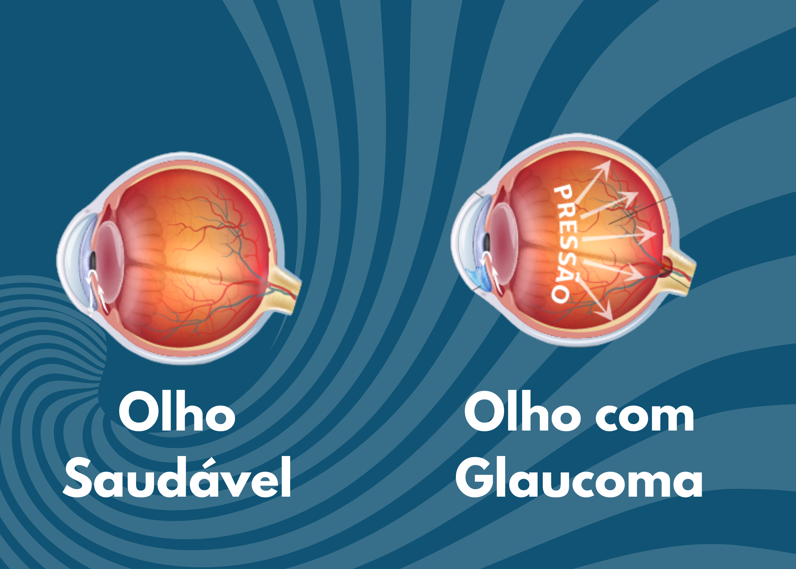

Glaucoma
O que é glaucoma?
O glaucoma é uma doença que atinge o nervo óptico, responsável por levar as informações do olho até o cérebro. A doença causa a morte das células ganglionares retinianas e, com isso, a visão vai sendo perdida de forma lenta e silenciosa. Na maioria dos casos, está associada ao aumento da pressão intraocular, mas também pode ocorrer com pressão normal.
Sintomas
O glaucoma geralmente não apresenta sintomas em estágios iniciais. A perda de visão periférica acontece de forma lenta, e muitas vezes só é percebida quando já houve um dano importante e irreversível. Em casos mais graves ou agudos, o paciente pode sentir:
- Dificuldade para enxergar no escuro;
- Diminuição na percepção de contrastes;
- Lentidão na leitura e adaptação claro/escuro;
- Dor intensa, vermelhidão e visão embaçada (em crises de ângulo fechado);
- Olhos secos, olheiras ou cílios mais longos (efeito de colírios).
Tipos de Glaucoma
Existem mais de 30 tipos de glaucoma. Os principais são:
- Glaucoma de ângulo aberto: o mais comum, evolução lenta e sem dor;
- Glaucoma de ângulo fechado: ocorre de forma aguda, com dor intensa e urgência médica;
- Glaucoma congênito: presente desde o nascimento, normalmente exige cirurgia;
- Glaucoma secundário: causado por traumas, medicamentos (como corticoides), tumores ou inflamações.
Diagnóstico
O diagnóstico do glaucoma é feito com exames oftalmológicos, que incluem: a medição da pressão intraocular, avaliação do fundo de olho, exame de campo visual, tomografia de coerência óptica (OCT) e análise da camada de fibras nervosas.
Tratamento
O tratamento visa controlar a pressão ocular e impedir a progressão da doença. As opções incluem:
- Colírios: usados diariamente, ajudam a reduzir a pressão intraocular;
- Laser: técnica segura e eficaz, porém pouco usada no Brasil;
- Cirurgias: indicadas quando os colírios ou laser não funcionam.
Em casos de glaucoma de ângulo fechado, a cirurgia de catarata pode ajudar a abrir o ângulo e evitar o uso contínuo de medicamentos, mas não é eficaz para o glaucoma de ângulo aberto.
Fatores de risco
- Histórico familiar de glaucoma;
- Idade acima de 50 anos;
- Miopia (associada ao glaucoma de ângulo aberto);
- Hipermetropia (associada ao glaucoma de ângulo fechado);
- Pressão arterial baixa associada à pressão ocular alta;
- Diabetes descontrolado;
- Uso prolongado de corticoides.
Corticoides e outras drogas
O uso prolongado de corticoides, mesmo em pomadas ou colírios, pode causar aumento da pressão ocular e levar ao glaucoma. Por isso, devem ser usados somente com prescrição médica. Medicamentos como antidepressivos ou remédios para bexiga podem aumentar o risco em pessoas com ângulo estreito.
Existe cura?
O glaucoma não tem cura, mas tem controle. As células do nervo óptico que morrem não se regeneram, por isso é essencial o diagnóstico precoce para evitar a progressão. O tratamento é para a vida toda.
Importante!
Algumas pessoas têm pressão alta nos olhos, mas não desenvolvem glaucoma. Por isso, só se inicia o tratamento quando há sinais reais da doença. O acompanhamento oftalmológico frequente é indispensável.